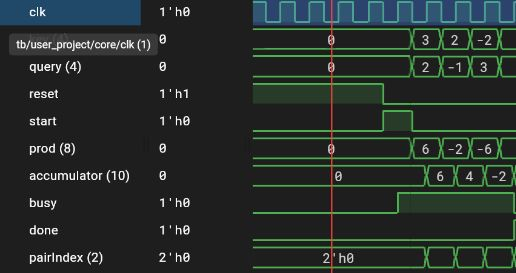
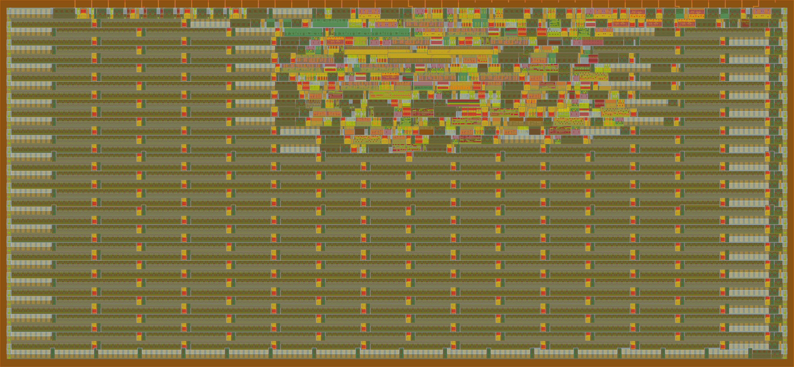

morphatn
a tiny signed dot product accelerator
what i built
morphatn is a tiny dot product accelerator made to help with the mathematical functions in transformer architectures, i built it cuz who doesnt want specialized hardware!
anyways it takes 4 signed 4 bit input pairs and uses a singular multiplier over and over again and returns a 10 bit total
how it works
at the chip interface, reset is active low: hold rst_n low through a rising clock edge, then raise it, pulse start high while idle to begin a calculation
on start accepted the total and counter get cleared (setting busy to 1 and done to 0), then the next 4 rising edges each capture a product and add it to the accumulator
a little walkthrough: start clears the total to 0, then 2 × 3 brings it to 6, −1 × 2 brings it to 4, 3 × −2 brings it to −2, and 4 × 1 finishes at 2
to put it simply done stays low during calc and rises alongside the completed result, then falls one clock later, done is a single cycle notif while the result lasts longer (stays in accumulator until reset takes effect or another start is accepted while idle)
testing
during testing the accumulator progressed successfully through 6, 4, −2, and later 2
a new start also cleared the prev total w/o needing reset, 4 copies of (−8) × (−8) produced 256 while four copies of (−8) × 7 produced −224, and reset cleared a partial total of 112 and returned the unit to idle
the automated gh actions test checked the example via chip facing pins incl output directions and completion timing, all simulations so far!

waveforms explained
at start it goes high while idle, and at the next rising clock edge, busy rises and the accumulator clears
when inputs are given query and key change on falling edges, giving them time to settle before the next rising edge, the product changes when the inputs change because the multiplier is combinational, meaning it doesn’t wait for a clock
accumulator changes only on rising edges, progressing 0 to 6 to 4 to −2 to 2, at completion on the fourth calculation edge, the final product is added, busy falls, and done rises, afterward done falls one clock later, but the accumulator holds 2
what i learned
while playing around with it i expected reset to clear the partial sum immediately for some reason but it stayed at 112 until the next rising edge cuz the reset check lives inside always @(posedge clk), so it only takes effect when that edge occurs, this was the core’s active high reset, synchronous reset is pretty cool
at the chip interface, the wrapper converts the active low rst_n input into the core’s active high reset
chip implementation
for the chip i used the tiny tapeout gf180 verilog template (targeting one tile)
more details: the wrapper packs query and key into the eight input pins, the ten bit result spans eight dedicated outputs and two configurable pins, other pins carry start, busy, and done
the physical design build, precheck, and gate level sim passed

current status
and lastly design has not yet fabbed! physical FPGA testing is still pending